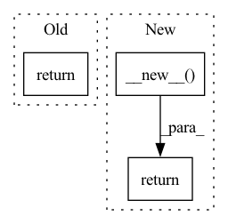

Pattern ID :13856
Before Change
self.optimizer=torch.optim.SGD(self.classifier.parameters(), self.learning_rate)
def __new__(self):
return self.optimizer
def create_loss_function(type):
try:After Change
self.optimizer=torch.optim.SGD(self.classifier.parameters(), self.learning_rate)
def __new__(cls,**kwargs):
instance = super(Optimizer, cls).__new__( cls, **kwargs)
return instance.optimizer
def create_loss_function(type):
try:In pattern: SUPERPATTERN
Frequency: 4
Non-data size: 3
Instances Fragment ID: 46123354
Project Name: radtorch/radtorch
Commit Name: 12dc95df8ce2ecc7307232a8bcf13402a085fbd9
Time: 2020-04-06
Author: elbanan@users.noreply.github.com
File Name: radtorch/test.py
M Class Name: Optimizer
N Class Name: Optimizer
M Method Name: __new__(1)
N Method Name: __new__(1)
M Parent Class:
N Parent Class:
M File Name: radtorch/test.py
N File Name: radtorch/test.py
M Start Line: 81
M End Line: 81
N Start Line: 81
N End Line: 82
Before Change
def __new__(cls,**kwargs):
instance = super(Optimizer, cls).__new__(cls, **kwargs)
return instance.optimizer
def create_loss_function(type):
try:After Change
self.optimizer=torch.optim.SGD(self.classifier.parameters(), self.learning_rate)
def __new__(cls,**kwargs):
return object.__new__( cls)
def create_loss_function(type):
try:
loss_function=supported_loss[type] Fragment ID: 46123353
Project Name: radtorch/radtorch
Commit Name: 5b07fc3935a4b3bc6180f8ca7d4da4250fdad51b
Time: 2020-04-06
Author: elbanan@users.noreply.github.com
File Name: radtorch/test.py
M Class Name: Optimizer
N Class Name: Optimizer
M Method Name: __new__(1)
N Method Name: __new__(1)
M Parent Class:
N Parent Class:
M File Name: radtorch/test.py
N File Name: radtorch/test.py
M Start Line: 81
M End Line: 82
N Start Line: 80
N End Line: 80
Before Change
def __new__(cls,**kwargs):
instance = super(Classifier, cls).__new__(cls, **kwargs)
return instance.model
class Optimizer():
def __init__(self, **kwargs):After Change
elif "resnet" in self.model_arch: self.model.fc=torch.nn.Sequential(torch.nn.Linear(in_features=self.in_features, out_features=self.output_classes, bias=True),torch.nn.LogSoftmax(dim=1))
def __new__(cls,**kwargs):
return object.__new__( cls)
class Optimizer():
def __init__(self, **kwargs):
for k,v in kwargs.items(): Fragment ID: 46123352
Project Name: radtorch/radtorch
Commit Name: 5b07fc3935a4b3bc6180f8ca7d4da4250fdad51b
Time: 2020-04-06
Author: elbanan@users.noreply.github.com
File Name: radtorch/test.py
M Class Name: Classifier
N Class Name: Classifier
M Method Name: __new__(1)
N Method Name: __new__(1)
M Parent Class: object
N Parent Class:
M File Name: radtorch/test.py
N File Name: radtorch/test.py
M Start Line: 64
M End Line: 65
N Start Line: 64
N End Line: 64
Before Change
"""Return a copy of this hook.
This is used to describe hooks of different modules by a single hook instance.
"""
return BasicHook(
self.input_modifiers,
self.param_modifiers,
self.output_modifiers,After Change
"""Return a copy of this hook.
This is used to describe hooks of different modules by a single hook instance.
"""
copy = BasicHook.__new__( type(self))
BasicHook.__init__(
copy,
self.input_modifiers,
self.param_modifiers,
self.output_modifiers,
self.gradient_mapper,
self.reducer,
**self.param_kwargs,
)
return copy
@staticmethod
def _default_modifier(obj, name=None): Fragment ID: 46123351
Project Name: chr5tphr/zennit
Commit Name: 3e8c989c0fcfd518e548c8150b37ca9a159afda2
Time: 2022-06-17
Author: chrstphr@posteo.eu
File Name: src/zennit/core.py
M Class Name: BasicHook
N Class Name: BasicHook
M Method Name: copy(1)
N Method Name: copy(1)
M Parent Class: Hook
N Parent Class: Hook
M File Name: src/zennit/core.py
N File Name: src/zennit/core.py
M Start Line: 346
M End Line: 354
N Start Line: 417
N End Line: 427